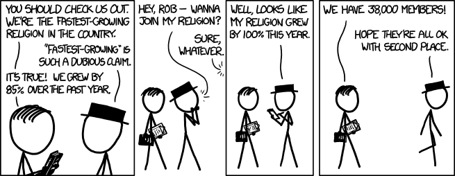
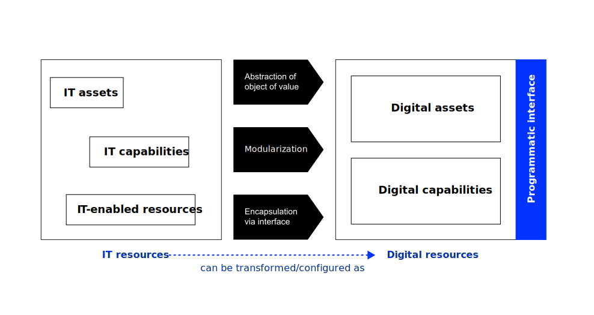
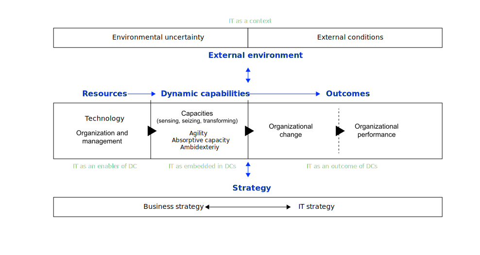
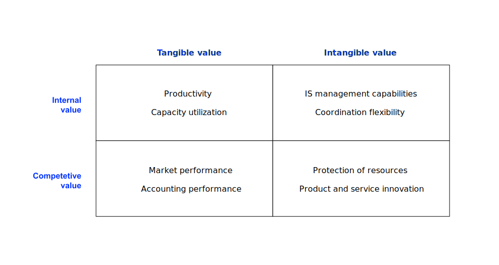
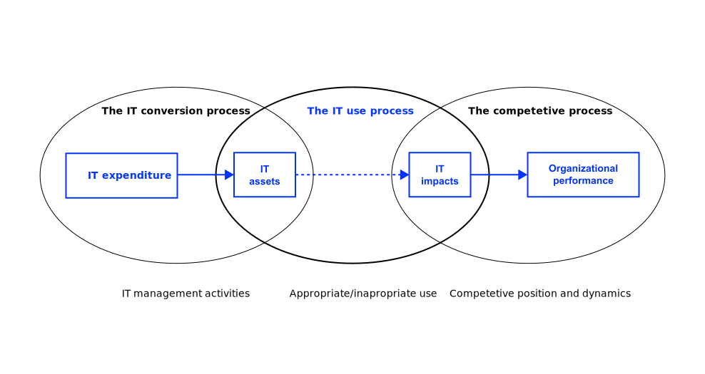
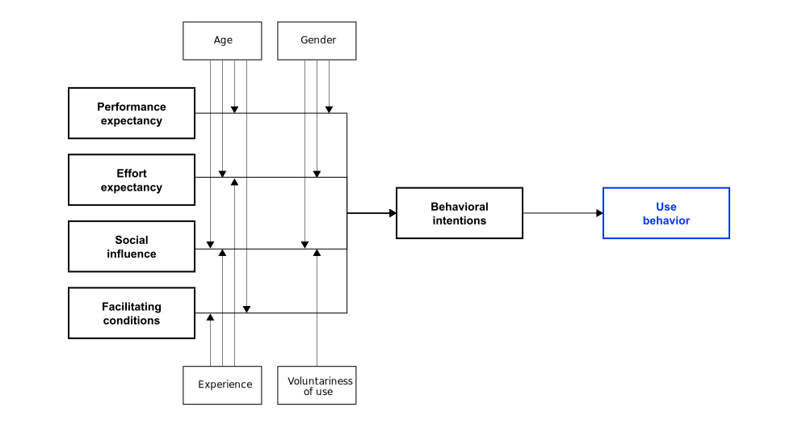
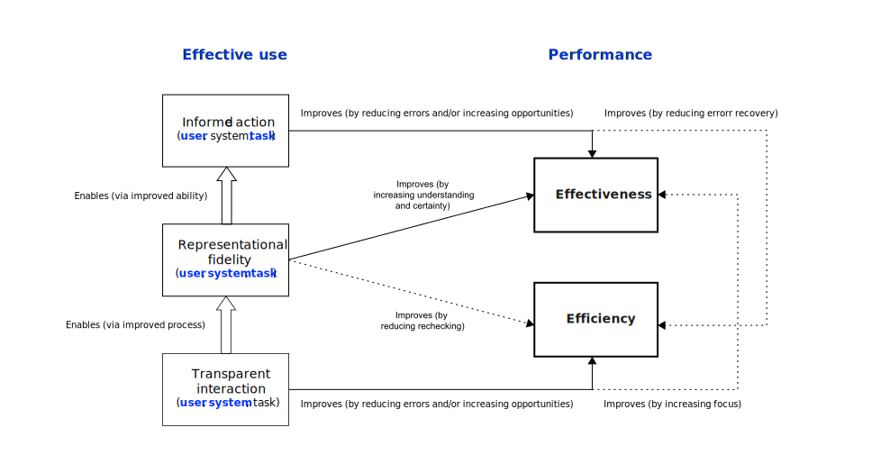

üíé Business Value Creation with IT (BVC)
Neu-Ulm University of Applied Sciences
January 1, 2023

Let’s define some core terms.
The information systems (IS) literature categorizes IT resources into
To create IT-enabled resources organizations need to integrate IT assets, IT capabilities and organizational resources in a way that it creates synergies.
Now what’s the difference between IT asset and a digital asset?
The term digital is increasingly used as a qualifier to established concepts (e.g., resource, capability, leadership).
This shift relates to changes regarding the contemporary settings of information technology use and its effects.
Piccoli, Rodriguez, and Grover (2022) defines some essential digital constructs as follows:

The resource-based view supports that firms may achieve a competitive advantage based on their bundles of resources and capabilities (Peteraf, Di Stefano, and Verona 2013; Wade and Hulland 2004).
The dynamic capabilities (DC) view argues that firms have to evolve their resource and capability base in order to ensure a sustained competitive advantage (Peteraf, Di Stefano, and Verona 2013) — two types of resources:
DCs govern the change of other organizational capabilities (Teece 2014).

How can value created with IT (including AI) be defined?
Value created by IT is—in a business context—usually referred to as IT/IS business value.
IS business value is the impact of investments in particular IS assets on the multidimensional performance and capabilities of economic entities at various levels, complemented by the ultimate meaning of performance in the economic environment. Schryen (2013, 141)
The ultimate meaning of performance refers to what is subsequently derived if the outcome is exploited, e.g.




Please read Bygstad (2017) and answer the following questions: